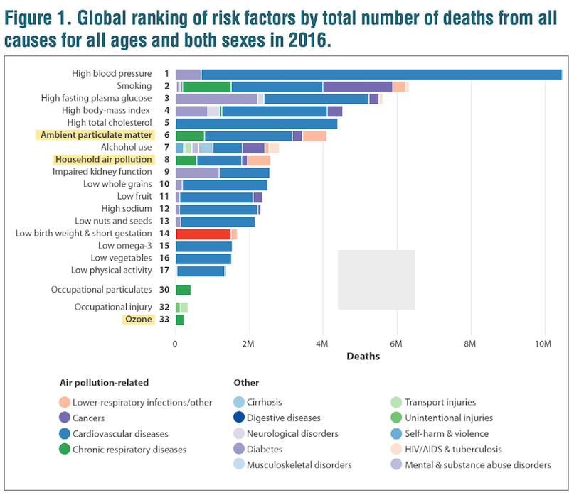

09-cs02-intro
2024-11-05
Air Pollutants
Some sources are natural while others are anthropogenic (human-derived):

Particulate Pollution
Air pollution particulates are generally described by their size:
Large Coarse Particulate Matter - has diameter of >10 micrometers (10 µm)
Coarse Particulate Matter (called PM10-2.5) - has diameter of between 2.5 µm and 10 µm
Fine Particulate Matter (called PM2.5) - has diameter of < 2.5 µm
PM10 includes any particulate matter <10 µm (both coarse and fine particulate matter)

Which do you think is most detrimental to our health? (and why?)
Common Pollutants and their size

Penetration into the human body

Why to Care: The State of Global Air
The State of Global Air is a report released every year to communicate the impact of air pollution on public health.
The State of Global Air 2019 report (which uses data from 2017) stated that:
Air pollution is the fifth leading risk factor for mortality worldwide. It is responsible for more deaths than many better-known risk factors such as malnutrition, alcohol use, and physical inactivity. Each year, more people die from air pollution–related disease than from road traffic injuries or malaria.

In 2017, air pollution is estimated to have contributed to close to 5 million deaths globally — nearly 1 in every 10 deaths.

The State of Global Air 2018 report (using data from 2016) separated different types of air pollution & found that particulate pollution was particularly associated with mortality.

The 2019 report shows that the highest levels of fine particulate pollution occur in Africa and Asia and that:
More than 90% of people worldwide live in areas exceeding the World Health Organization (WHO) Guideline for healthy air. More than half live in areas that do not even meet WHO’s least-stringent air quality target.

Overall Improvement
Looking at the US specifically, air pollution levels are generally improving, with declining national air pollutant concentration averages as shown from the 2019 Our Nation’s Air report from the US Environmental Protection Agency (EPA):

Machine Learning offers a solution
An article published in the Environmental Health journal dealt with this issue by using data, including population density and road density, among other features, to model or predict air pollution levels at a more localized scale using machine learning (ML) methods.

The authors of this article state that:
“Exposure to atmospheric particulate matter (PM) remains an important public health concern, although it remains difficult to quantify accurately across large geographic areas with sufficiently high spatial resolution. Recent epidemiologic analyses have demonstrated the importance of spatially- and temporally-resolved exposure estimates, which show larger PM-mediated health effects as compared to nearest monitor or county-specific ambient concentrations.”
The article above demonstrates that machine learning methods can be used to predict air pollution levels when traditional monitoring systems are not available in a particular area or when there is not enough spatial granularity with current monitoring systems.
So…we’re going to do the same
Monitor Data
- Monitor data in this case study come from a system of monitors in which roughly 90% are located within cities.
- There is an equity issue in terms of capturing the air pollution levels of more rural areas.
- To get a better sense of the pollution exposures for the individuals living in these areas, methods like machine learning can be useful to estimate air pollution levels in areas with little to no monitoring.
- Specifically, these methods can be used to estimate air pollution in these low monitoring areas so that we can make a map like this where we have annual estimates for all of the contiguous US:

Features
| Variable | Details |
|---|---|
| id | Monitor number – the county number is indicated before the decimal – the monitor number is indicated after the decimal Example: 1073.0023 is Jefferson county (1073) and .0023 one of 8 monitors |
| fips | Federal information processing standard number for the county where the monitor is located – 5 digit id code for counties (zero is often the first value and sometimes is not shown) – the first 2 numbers indicate the state – the last three numbers indicate the county Example: Alabama’s state code is 01 because it is first alphabetically (note: Alaska and Hawaii are not included because they are not part of the contiguous US) |
| Lat | Latitude of the monitor in degrees |
| Lon | Longitude of the monitor in degrees |
| state | State where the monitor is located |
| county | County where the monitor is located |
| city | City where the monitor is located |
| CMAQ | Estimated values of air pollution from a computational model called Community Multiscale Air Quality (CMAQ) – A monitoring system that simulates the physics of the atmosphere using chemistry and weather data to predict the air pollution – Does not use any of the PM2.5 gravimetric monitoring data. (There is a version that does use the gravimetric monitoring data, but not this one!) – Data from the EPA |
| zcta | Zip Code Tabulation Area where the monitor is located – Postal Zip codes are converted into “generalized areal representations” that are non-overlapping – Data from the 2010 Census |
| zcta_area | Land area of the zip code area in meters squared – Data from the 2010 Census |
| zcta_pop | Population in the zip code area – Data from the 2010 Census |
| imp_a500 | Impervious surface measure – Within a circle with a radius of 500 meters around the monitor – Impervious surface are roads, concrete, parking lots, buildings – This is a measure of development |
| imp_a1000 | Impervious surface measure – Within a circle with a radius of 1000 meters around the monitor |
| imp_a5000 | Impervious surface measure – Within a circle with a radius of 5000 meters around the monitor |
| imp_a10000 | Impervious surface measure – Within a circle with a radius of 10000 meters around the monitor |
| imp_a15000 | Impervious surface measure – Within a circle with a radius of 15000 meters around the monitor |
| county_area | Land area of the county of the monitor in meters squared |
| county_pop | Population of the county of the monitor |
| Log_dist_to_prisec | Log (Natural log) distance to a primary or secondary road from the monitor – Highway or major road |
| log_pri_length_5000 | Count of primary road length in meters in a circle with a radius of 5000 meters around the monitor (Natural log) – Highways only |
| log_pri_length_10000 | Count of primary road length in meters in a circle with a radius of 10000 meters around the monitor (Natural log) – Highways only |
| log_pri_length_15000 | Count of primary road length in meters in a circle with a radius of 15000 meters around the monitor (Natural log) – Highways only |
| log_pri_length_25000 | Count of primary road length in meters in a circle with a radius of 25000 meters around the monitor (Natural log) – Highways only |
| log_prisec_length_500 | Count of primary and secondary road length in meters in a circle with a radius of 500 meters around the monitor (Natural log) – Highway and secondary roads |
| log_prisec_length_1000 | Count of primary and secondary road length in meters in a circle with a radius of 1000 meters around the monitor (Natural log) – Highway and secondary roads |
| log_prisec_length_5000 | Count of primary and secondary road length in meters in a circle with a radius of 5000 meters around the monitor (Natural log) – Highway and secondary roads |
| log_prisec_length_10000 | Count of primary and secondary road length in meters in a circle with a radius of 10000 meters around the monitor (Natural log) – Highway and secondary roads |
| log_prisec_length_15000 | Count of primary and secondary road length in meters in a circle with a radius of 15000 meters around the monitor (Natural log) – Highway and secondary roads |
| log_prisec_length_25000 | Count of primary and secondary road length in meters in a circle with a radius of 25000 meters around the monitor (Natural log) – Highway and secondary roads |
| log_nei_2008_pm25_sum_10000 | Tons of emissions from major sources data base (annual data) sum of all sources within a circle with a radius of 10000 meters of distance around the monitor (Natural log) |
| log_nei_2008_pm25_sum_15000 | Tons of emissions from major sources data base (annual data) sum of all sources within a circle with a radius of 15000 meters of distance around the monitor (Natural log) |
| log_nei_2008_pm25_sum_25000 | Tons of emissions from major sources data base (annual data) sum of all sources within a circle with a radius of 25000 meters of distance around the monitor (Natural log) |
| log_nei_2008_pm10_sum_10000 | Tons of emissions from major sources data base (annual data) sum of all sources within a circle with a radius of 10000 meters of distance around the monitor (Natural log) |
| log_nei_2008_pm10_sum_15000 | Tons of emissions from major sources data base (annual data) sum of all sources within a circle with a radius of 15000 meters of distance around the monitor (Natural log) |
| log_nei_2008_pm10_sum_25000 | Tons of emissions from major sources data base (annual data) sum of all sources within a circle with a radius of 25000 meters of distance around the monitor (Natural log) |
| popdens_county | Population density (number of people per kilometer squared area of the county) |
| popdens_zcta | Population density (number of people per kilometer squared area of zcta) |
| nohs | Percentage of people in zcta area where the monitor is that do not have a high school degree – Data from the Census |
| somehs | Percentage of people in zcta area where the monitor whose highest formal educational attainment was some high school education – Data from the Census |
| hs | Percentage of people in zcta area where the monitor whose highest formal educational attainment was completing a high school degree – Data from the Census |
| somecollege | Percentage of people in zcta area where the monitor whose highest formal educational attainment was completing some college education – Data from the Census |
| associate | Percentage of people in zcta area where the monitor whose highest formal educational attainment was completing an associate degree – Data from the Census |
| bachelor | Percentage of people in zcta area where the monitor whose highest formal educational attainment was a bachelor’s degree – Data from the Census |
| grad | Percentage of people in zcta area where the monitor whose highest formal educational attainment was a graduate degree – Data from the Census |
| pov | Percentage of people in zcta area where the monitor is that lived in poverty in 2008 - or would it have been 2007 guidelines??https://aspe.hhs.gov/2007-hhs-poverty-guidelines – Data from the Census |
| hs_orless | Percentage of people in zcta area where the monitor whose highest formal educational attainment was a high school degree or less (sum of nohs, somehs, and hs) |
| urc2013 | 2013 Urban-rural classification of the county where the monitor is located – 6 category variable - 1 is totally urban 6 is completely rural – Data from the National Center for Health Statistics |
| urc2006 | 2006 Urban-rural classification of the county where the monitor is located – 6 category variable - 1 is totally urban 6 is completely rural – Data from the National Center for Health Statistics |
| aod | Aerosol Optical Depth measurement from a NASA satellite – based on the diffraction of a laser – used as a proxy of particulate pollution – unit-less - higher value indicates more pollution – Data from NASA |
Many of these features have to do with the circular area around the monitor called the “buffer”. These are illustrated in the following figure:

Your Turn
Scroll through the data, consider 1) if these data are in tidy format and 2) which variables you think may be most helpful in building a model to predict annual air pollution.